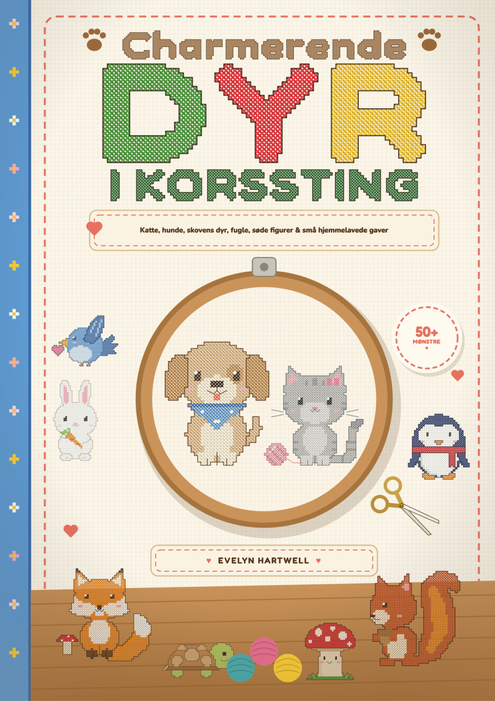

Vælg et lille motiv, lær tællemønstret at kende, og brodér dit første projekt trin for trin.
Dine mønstre indlæses…
Aktivér JavaScript for at bruge medlemsområdet, eller åbn bøgerne direkte via linkene nedenfor.
Skriv en e-mail